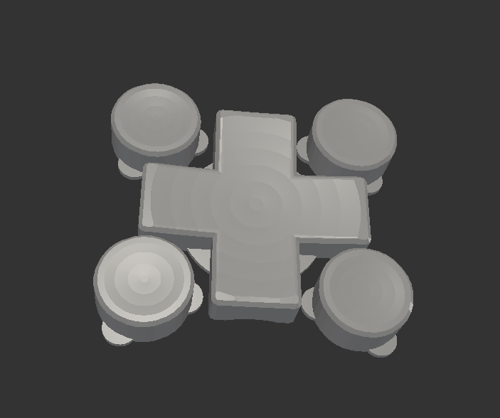

3D-printed Buttons¶
Published on 2025-01-16 in µGame S3.
The d-pad and buttons for the case were a long-time problem for me. Laser-cutting them gives pretty nice effects, but there is no easy way of making them stay in place. I tried gluing them to the buttons, sticking the buttons into a hole in them, gluing additional parts to the bottom to hook against the case, and finally I settled on a sticky tape applied from the back. But it never was quite right.
Recently, I finally tried 3D-printing them. It’s a problem for me, because I don’t really have an easy access to a 3D-printer. I don’t own one, and the ones in the hackerspaces and fablabs around are always either broken or there is a long queue of people wanting to use them. But the PCB factories started to offer also 3D printing services, so I decided to try one of those. An additional advantage is that a small and precise part like those button caps is best printed with resin, and that’s even harder to come by in local fablabs.
So I started my trusty OpenSCAD, and quickly made a 3D model of the d-pad and buttons, and then exported it as an STL file. I went through several iterations, and after I added rounded edges with Minkowsky sum, I had to actually move to my work laptop to generate the STL, because it was running out of memory. Well, I only need to render it once, so that’s fine. In the end I came up with this:
I tried several different resins, including transparent, but I think the best result is with the cheap black resin that JLC offers.
I’m really happy with how this came out. The buttons have a slight texture to them, and are pleasant to touch. They also sit in there very well, and after I got the height of the insides right, they work very well mechanically. The buttons under them are clicky, but with very low force, so the end result is very pleasant.
I also made an empty PCB with sole nice pattern and silkscreen to serve as the back cover. It works well with the thin pouch LiPo batteries, and with the large-headed machine screws.